Dynavision 4 (Posse de Samuel Büron)
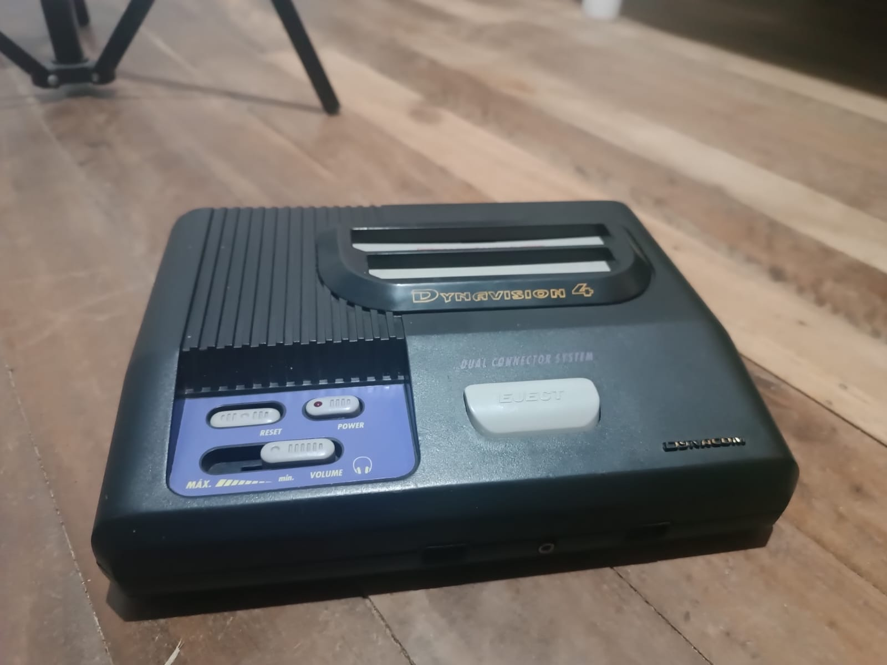
Dynavision 4
O Dynavision 4 da Dynacom foi lançado em 1995, ficou famoso por sua estilosa carcaça baseada no Megavision, clone
do Mega Drive da Sega feito pela Dynacom, mas principalmente pelo seu Dual Connector System que permite uso de
cartuchos de 72 pinos (Padrão NES) e 60 pinos (Padrão Famicom).
Mercado Nacional
Devido as leis da Reserva de Mercado, várias empresas como CCE, Gradiente e nesse caso, a Dynacom, decidiram
lançar seus prórpios consoles, usando engenharia reversa e se aproveitando da ausência temporária de uma parceria da Nintendo
alguma empresa brasileira (futuramente se aliaram a PlayTronic) para lançar sua linha de consoles, sendo a partir do segundo até o
quarto sendo Famiclones.
Contexto Histórico
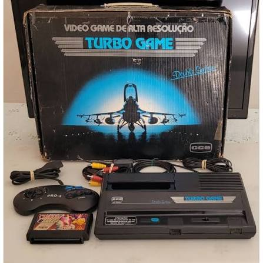
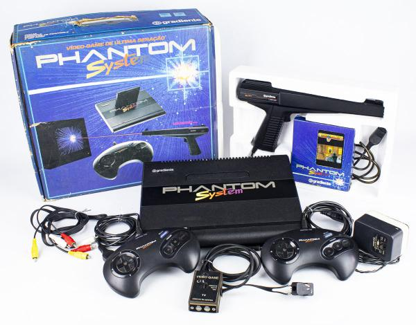
Entre o final dos anos 80 e início dos anos 90, a indústria brasileira estava dividida entre 3 grandes empresas: CCE, Gradiente
e Dynacom. Essas respectivas empresas criaram seus consoles Famiclones e lançavam seus jogos "Oficiais" devido a Nintendo
não estár no Brasil, a rivalidade foi acirrada, mas a conclusão deixou o Phantom System como o mais lembrado.
O Dynavision 4 é sucessor do Dynavision 3, que é sucessor do Dynavision 2, que é sucessor de Dynavision original que é uma cópia do
Atari 2600.
Jogos e Acessórios
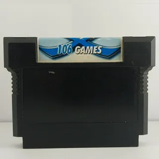
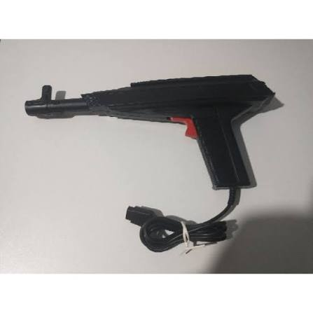
Assim como as outras empresas e consoles citados, a Dynacom fez cartuchos de jogos para seus consoles Famiclones e Atari, sendo
as mais comuns as Multi-Jogos, tendo jogos como Duck-Hunt e Challenger da Hudson.
Atualmente os cartuchos são de fácil acesso, não tendo valores elevados como jogos originais de NES e Famicom, mas depende do
estado do cartucho.
O Dynavision e seus modelos tiveram acessórios, o mais famoso sendo a Light Gun/Light Phaser, a versão da Dynacom da Zapper.
Modelos e variações
Durante sua época a Dynacom lançou diversos modelos e versões diferentes de seus consoles, indo de cópia de Atari 2600 para famiclone
até para consoles mais estranhos.
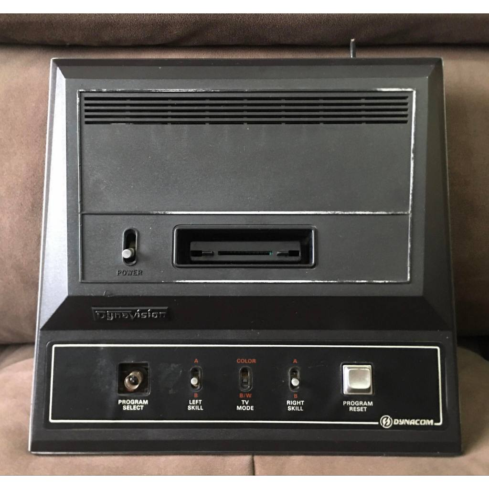
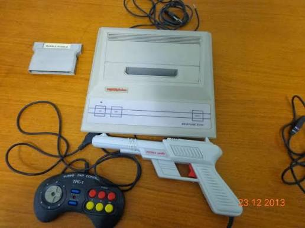
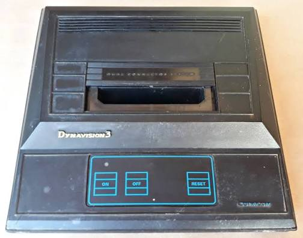
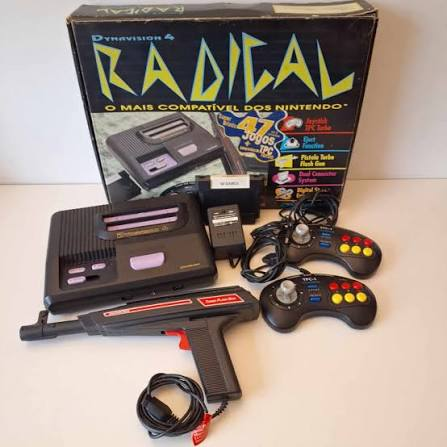
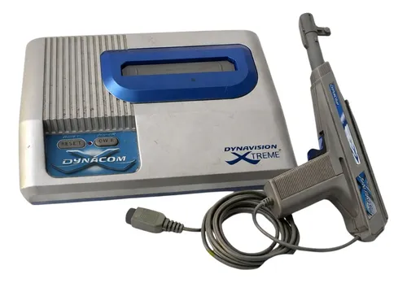
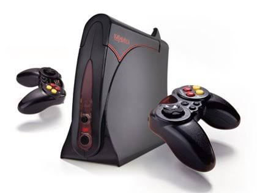